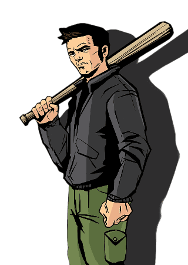

Grand Theft Auto

Main Page

Grand Theft Auto, commonly referred to as GTA, is an open world
action-adventure crime sandbox video-game series, as well as one of
the longest video-game arcade series, published by Rockstar Games
and developed by its subsidiary companies, including Rockstar North
(formerly DMA Design Limited), Rockstar Leeds, Rockstar Toronto and
Rockstar Lincoln. The first games were developed by Rockstar North
(formerly DMA Design) and BMG Interactive (a subsidiary of BMG
Records). The first game of the series was released in 1998.
There are currently seventeen games in the series, plus two
expansion packs for the original and two expansions for GTA IV and
including a multiplayer title. The games have been released for
various platforms (e.g. Microsoft Xbox (Original Xbox, Xbox 360,
Xbox One, Xbox Series X/S), Sony PlayStation (PS1, PS4, PS2, PS1,
PS5) PC (Windows, MS-DOS), macOS (OS X) and Sega Dreamcast),
including the Game Boy Color (GBC) Game Boy Advance (GBA),
PlayStation Portable , Nintendo DS, iOS, Android and Fire OS, with
all but two of the games released on multiple platforms.
| Title | Year | Platforms | City | Main Character |
|---|---|---|---|---|
| Grand Theft Auto | 1997 | PlayStation, MS-DOS | Maps | Claude Speed |
| Grand Theft Auto 2 | 1999 | PlayStation, Microsoft Windows | Maps | Claude Speed |
| Grand Theft Auto III | 2001 | PlayStation 2 | Liberty City | Claude Speed |
| Grand Theft Auto: Vice City | 2002 | PlayStation 2 | Vice City | Tommy Vercetti |
| Grand Theft Auto: San Andreas | 2004 | PlayStation 2 | San Andreas | Carl Johnson |
| Grand Theft Auto IV | 2008 | PlayStation 3, Xbox 360 | Liberty City | Niko Bellic |
| Grand Theft Auto V | 2013 | PlayStation 3, Xbox 360, PlayStation 4, Xbox One, Windows | Los Santos | Franklin Clinton, Michael De Santa, Trevor Philips |